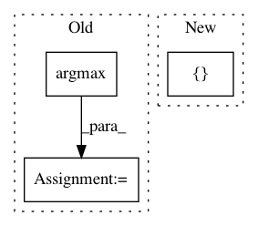

77a383e645c7b42ea025511738638e1238b971bb,pycorrector/rnn_crf/train.py,,train,#,21
Before Change
model = rnn_crf(X_train, y_train, X_test, y_test, batch_size, word_ids_dict, label_ids_dict,
embedding_dim, rnn_hidden_dim, epoch)
// predict
y_test_pred = model.predict(word_seq).argmax(-1)
// save predict file
logger.info("Training has finished.")
After Change
model.fit(X_train, y_train,
batch_size=batch_size,
epochs=epoch,
validation_data=[X_test, y_test])
// save model
save_model(model, save_model_path)
logger.info("model saved: %s" % save_model_path)
In pattern: SUPERPATTERN
Frequency: 4
Non-data size: 3
Instances
Project Name: shibing624/pycorrector
Commit Name: 77a383e645c7b42ea025511738638e1238b971bb
Time: 2018-04-10
Author: 507153809@qq.com
File Name: pycorrector/rnn_crf/train.py
Class Name:
Method Name: train
Project Name: commonsense/conceptnet5
Commit Name: a98578f25b2030dabac12c7bc71a3e30ed99fe1f
Time: 2018-05-18
Author: rbeaudoin@luminoso.com
File Name: conceptnet5/vectors/propagate.py
Class Name:
Method Name: propagate
Project Name: titu1994/DenseNet
Commit Name: 3a3dc678e50e60f9cf05e95e992ab873046c1b8f
Time: 2016-12-05
Author: titu1994@gmail.com
File Name: cifar10.py
Class Name:
Method Name:
Project Name: ntucllab/libact
Commit Name: e81142f0869321cd8792e13bfc4f6fb85d9f1efc
Time: 2015-12-22
Author: yangarbiter@gmail.com
File Name: libact/query_strategies/uncertainty_sampling.py
Class Name: UncertaintySampling
Method Name: make_query